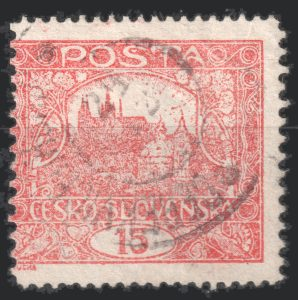
1Defectos de fabricación
La emisión Hradčany se produjo en 1919 con prisas, con un equipamiento provisional y con el papel que hubiera a mano. Las huellas de aquellas prisas siguen viéndose hoy en los sellos. Esta página reúne los defectos de fabricación del valor de 15h — es decir, las desviaciones que se originaron durante la fabricación del pliego, no los daños posteriores a la emisión. Se ordenan por fase de fabricación: papel → impresión → dentado. Cómo transcurría todo el proceso y por qué produce precisamente estas desviaciones lo explica la página Tipografía.
Un defecto de fabricación no es lo mismo que una variedad de catálogo. Los grupos de dentado A–H, los tipos de dibujo o los matices describen con qué y cómo se fabricó un pliego, y son regulares. Un defecto es una perturbación de ese mismo proceso — aleatoria en la mayoría de los tipos y, en algunos (las claras), ligada a un punto concreto de la plancha. Los defectos de plancha constantes, que se repiten en la misma posición, pertenecen a la reconstrucción de planchas — los encontrará en la galería de posiciones.
- Defectos del dentadoDoble dentadoDentado omitidoDesplazamiento del dentado
- Defectos de impresiónImpresión parcialmente duplicadaAnillos errantesVelosManchas blancasImpresión diluida con manchas de tinta
- Daños de la plancha de impresiónPlancha de impresión agrietada — 11/IIMarco dañado — 60/VI
- Defectos del papelArruga del papelAstilla en el papel
Defectos del dentado
El dentado era la última operación y, al mismo tiempo, la más propensa al error. En el dentado de línea cada fila de agujeros se aplicaba por separado, de modo que el pliego entero surgía de decenas de golpes cuya precisión dependía del operario. De ahí proceden dos defectos opuestos: una fila de más y una fila que falta.
Doble dentado
Capítulo aparte merecen los ejemplares en los que el útil de perforar pasó dos veces por el mismo espacio. Según la distancia a la que cayeron ambos golpes, el resultado tiene un aspecto completamente distinto: con un desplazamiento pequeño los agujeros se solapan y los dientes quedan deshilachados; con uno mayor surgen dos filas claramente separadas y entre ellas una banda de papel. Ambas formas están documentadas en la colección.
Ejemplar 1 — dos golpes ligeramente desplazados
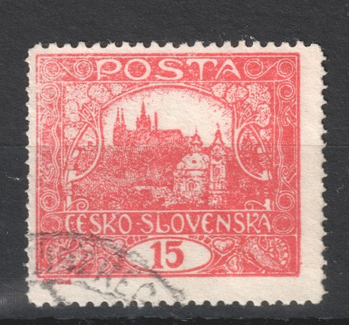
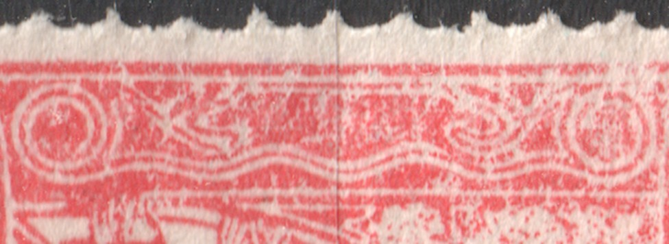
En este ejemplar el segundo golpe alcanzó ambos lados verticales y solo lo separa del primero una fracción del paso. Por eso las filas no coinciden solo por poco: los agujeros se solapan en algunos puntos y entre ellos quedan dientes estrechos y deshilachados. A lo largo del lado se alternan dientes de anchura normal con otros llamativamente delgados y la profundidad de los cortes varía; en el detalle ampliado se ve cómo a las parejas de agujeros muy próximos solo las separa una fina tira de papel.
Ejemplar 2 — dos filas separadas en el lado inferior
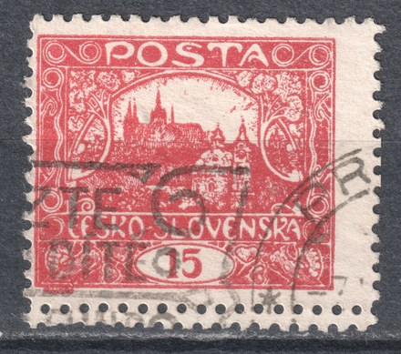
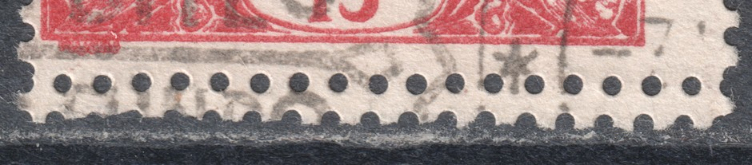
El ejemplar está determinado como posición 100 de la tercera plancha de impresión — la esquina inferior derecha del pliego, es decir, la última fila. Aquí el lado inferior fue perforado por dos filas independientes de agujeros superpuestas, desplazadas entre sí menos de un paso, de modo que no se mezclaron y quedan una junto a otra como dos paralelas. El sello se separó por la inferior de ellas — esa tiene el perfil dentado habitual —, mientras que la fila superior quedó entera: yace intacta en el margen como una sucesión continua de agujeros redondos, porque por ella no se rasgó. Justamente eso es lo más valioso del ejemplar. Una fila de agujeros intacta dentro del margen no puede originarse por nada que no sea un segundo paso del útil, de modo que el defecto se documenta a sí mismo — a diferencia de los dientes deshilachados, que pueden confundirse con una separación poco cuidadosa.
Cómo se originó el defecto
El fondo es el mismo en ambos ejemplares: un mismo espacio recibió dos golpes. Puede ocurrir con cualquiera de los dos útiles con los que se perforó la emisión, pero cada uno llega a ello por un camino distinto — y los dos ejemplares de esta página muestran precisamente esos dos caminos.
- La perforadora de línea abre siempre una fila recta de agujeros a lo largo de todo el pliego; el pliego se desplaza después la medida de un sello y el útil golpea de nuevo. Todo el pliego surge así de decenas de golpes independientes y la precisión depende del operario. Si el pliego resbalaba, se colocaba una segunda vez o el operario perdía la cuenta de qué espacio había perforado ya, ese mismo espacio recibe un golpe de más — y, como las filas verticales y las horizontales se hacían en pasos separados, puede tratarse de cualquiera de ellas. A eso corresponde el ejemplar 1: están duplicados ambos lados verticales y el desplazamiento es tan pequeño que los agujeros se solapan.
- La perforadora de peine perfora en un solo golpe tres lados de toda una fila de sellos y el pliego avanza después una fila. Si ese avance falla — el pliego se desplaza poco o resbala —, la parte horizontal del peine cae en el espacio que el golpe anterior ya había perforado. Surge así una fila horizontal duplicada, mientras que los lados verticales quedan en orden, porque esos los hacen los dientes verticales del peine. Eso es exactamente lo que muestra el ejemplar 2: dos filas superpuestas en el lado inferior y los lados verticales intactos. En él encaja además la situación en el pliego. El ejemplar procede de la última fila, y el borde inferior de la última fila lo cierra el peine con un golpe final independiente — es el único espacio que el golpe solo cierra, en vez de abrir con él a la vez la fila siguiente. La repetición de ese golpe concreto se manifiesta, por tanto, exactamente donde se ve.
La dirección de la duplicación indica, por tanto, por sí sola con qué útil se trabajó. Un lado vertical duplicado apunta al dentado de línea; una fila horizontal duplicada con los lados verticales intactos corresponde a un fallo del avance en el peine. En el ejemplar 2 lo confirma también el paso: es más grueso que en el ejemplar 1 y corresponde al dentado de peine B. La determinación del ejemplar como la posición 100/III lo cierra — allí el peine golpeó dos veces con un desplazamiento muy pequeño.
El doble dentado no es un dentado de catálogo independiente. Los grupos A–H describen el tipo de útil y el paso, es decir, con qué se perforó el pliego — un paso repetido del mismo útil no cambia la medida, y el sello se determina por la fila que corresponde al paso regular. Se registra como una desviación del dentado: buscada por los coleccionistas, pero fuera de la clasificación de catálogo. Se distingue con facilidad de los dentados excepcionales I y L — allí cada lado tiene una sola fila de agujeros, solo que con un paso distinto del lado opuesto, mientras que en el doble dentado un mismo lado tiene dos filas.
Dentado omitido
Lo contrario de un golpe doble es un paso que no llegó a producirse. Entre dos filas de sellos queda entonces una banda continua de papel y el pliego no se puede rasgar por ese punto. Los sellos había que separarlos con tijeras o rasgándolos, de modo que el ejemplar acabado tiene uno o varios lados lisos, sin dientes — y los lados restantes dentados con normalidad.
Ejemplar 1 — falta el dentado horizontal
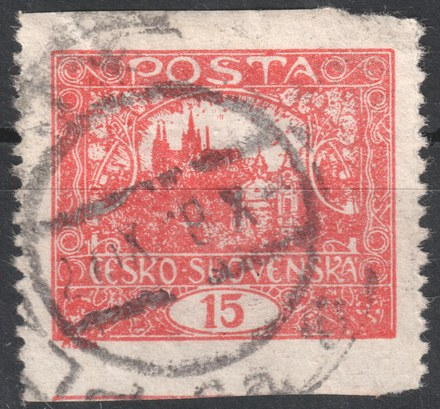
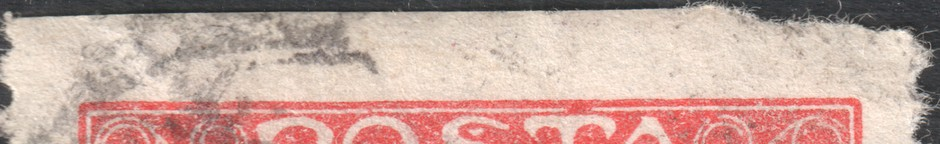
Faltan ambos dentados horizontales: los lados superior e inferior están separados con tijera y los lados verticales tienen dentado normal. Que el corte pasó entre dos sellos lo delata el borde inferior — en él se ve todavía un trozo del marco del sello vecino. Se omitieron, pues, dos filas horizontales consecutivas, lo que en una perforadora de línea significa que el pliego pasó sin golpe dos veces seguidas.
Ejemplar 2 — falta el dentado vertical
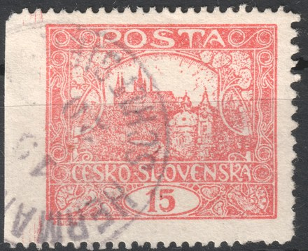
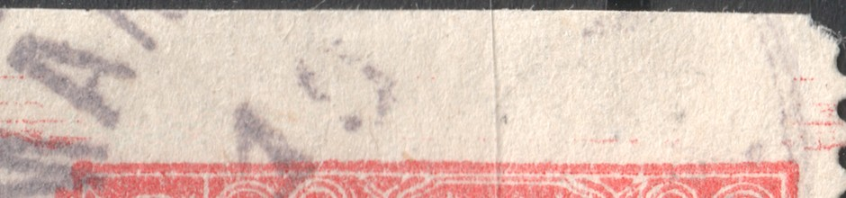
Aquí falta una sola fila vertical — el lado izquierdo. Los lados superior, inferior y derecho sí tienen dentado. El ancho margen liso de la izquierda lleva débiles restos de tinta roja del sello vecino, así que también aquí el corte pasó por el espacio libre entre dos sellos. El ejemplar es, por ello, documentable por sí mismo: si el margen estuviera simplemente recortado, le faltaría papel, no le sobraría.
Ejemplar 3 — falta el dentado superior
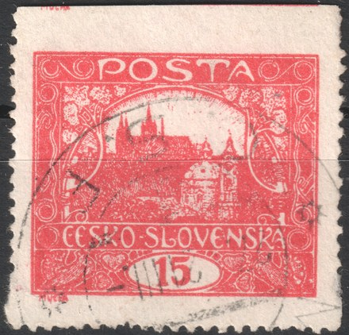
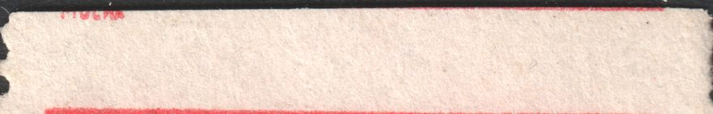
El tercer ejemplar es el más elocuente de los tres. Falta la fila horizontal superior; los lados izquierdo, derecho e inferior sí tienen dentado. En el ancho margen superior quedaron el marco y un resto de las letras del sello vecino — el corte no pasó, pues, por el centro del espacio, sino que alcanzó el dibujo del sello situado encima. Un margen así es a la vez la mejor prueba de autenticidad: un papel de más con la impresión ajena no se puede obtener recortando los dientes, sino solo porque el dentado faltara realmente en ese punto.
Cuidado con las confusiones. La emisión salió también sin dentar, y allí los cuatro lados son lisos — en un dentado omitido debe quedar al menos un lado dentado. El defecto también se puede fingir recortando los dientes, por lo que en cada ejemplar se valora la anchura del margen: un borde recortado es más estrecho de lo normal y suelen apreciarse en él restos de los agujeros. En las combinaciones más caras (dentado ausente en varios lados) es aconsejable un certificado.
Tema afín: el desplazamiento del dentado respecto al dibujo. No es un fallo del útil, sino una imprecisión al colocar el pliego — tan corriente en esta emisión que tiene apartado propio: Desplazamiento del dentado.
Desplazamiento del dentado
El dentado se perforaba en el pliego solo después de la impresión, en un paso de trabajo independiente y en otra máquina. La posición de la rejilla de perforación respecto al dibujo impreso nunca estuvo, por tanto, fijada, y en la emisión Hradčany se aparta del ideal con una frecuencia inusual. Los ejemplos siguientes proceden de una misma colección — 28 piezas, 29 sellos en total — y cubren toda la escala, desde márgenes apenas perceptiblemente desiguales hasta ejemplares en los que el dentado atraviesa el dibujo y en el margen queda una tira del sello vecino.
Por qué se produce el desplazamiento
- El pliego se colocaba en la máquina a mano contra unos topes. Cualquier imprecisión al colocarlo desplaza toda la rejilla de perforación a la vez — por eso todos los sellos de un mismo pliego suelen estar desplazados en la misma dirección.
- En el dentado de línea cada línea se perfora por separado y el pliego avanza entre una y otra. El error de un avance se suma a los anteriores, de modo que la desviación crece hacia el borde opuesto del pliego; además, ambas direcciones se hacían en pasos separados.
- En el dentado de peine un golpe corresponde a toda una fila, de modo que dentro de la fila el desplazamiento es igual en los diez sellos. La irregularidad aparece solo en el límite entre dos filas, donde dos golpes no se encontraron.
- Tampoco el propio dibujo ocupa siempre el mismo lugar en el pliego. La posición de la composición en la forma de impresión podía variar ligeramente, y ese desplazamiento de la impresión respecto al borde del pliego se suma después al del dentado.
- La emisión se produjo en 1919–1920 en condiciones provisionales, con prisas y en varias máquinas distintas. Un útil mal ajustado o desgastado y el trabajo rápido son la razón de que los desplazamientos sean en Hradčany bastante más corrientes que en emisiones posteriores.
Grados de desplazamiento
- Leve — los márgenes son de anchura desigual, el marco queda entero. Es el estado más corriente; se trata más de una cuestión de centrado que de una desviación interesante.
- Medio — el dentado alcanza el marco o lo atraviesa. El dibujo queda dañado, pero del sello vecino no queda todavía nada.
- Fuerte — en el margen queda una tira de papel con un resto de la impresión del sello vecino o, al contrario, falta parte del propio dibujo. Estos ejemplares son los más elocuentes, porque muestran directamente por cuánto erró la rejilla.
El desplazamiento no es un defecto de plancha. No se origina en la plancha de impresión, sino en la perforación, y por eso no se repite en la misma posición — no sirve para determinar ni la plancha ni el lugar en el pliego. En cambio, resulta útil al medir el dentado: en un ejemplar desplazado se ve a qué distancia del marco queda la fila y, en una pareja o una tira, también si el dentado es de línea o de peine.
Cautela con los ejemplares llamativos. Un desplazamiento fuerte aumenta el atractivo para el coleccionista, por lo que conviene comprobar que el dentado es original: comparar el paso con un tipo documentado de la misma plancha y verificar que la forma y la longitud de los dientes corresponden a los demás lados del sello.
Ejemplos de la colección
La dirección se indica siempre como el desplazamiento de la rejilla de perforación respecto al dibujo: desplazamiento a la derecha significa que el dentado queda más a la derecha, de modo que a la izquierda queda un margen estrecho y a la derecha uno ancho. Al hacer clic, el ejemplo se amplía.
Dentado desplazado a la derecha — a la izquierda la fila pasa pegada al marco, a la derecha queda un margen ancho.
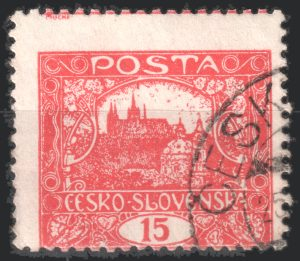
2La fila horizontal situada sobre el sello se perforó demasiado arriba, dentro del sello vecino: arriba sobra una tira de papel con un resto de su impresión. En horizontal, el desplazamiento es a la izquierda.
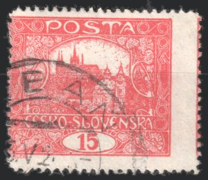
3Desplazamiento marcado a la derecha y hacia abajo — a la izquierda el dentado llega hasta el marco, a la derecha y abajo queda un margen muy ancho.
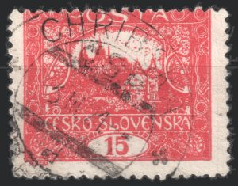
4Desplazamiento hacia abajo — la fila superior queda justo encima del marco, abajo queda un margen ancho.
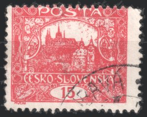
5Desplazamiento oblicuo a la derecha y hacia abajo, en ambas direcciones aproximadamente en la misma medida.
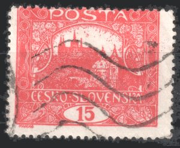
6Desplazamiento a la derecha y hacia abajo; la fila superior pasa pegada al marco, mientras que el margen inferior es ancho.
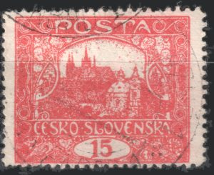
7Sello centrado en horizontal, pero ambas filas horizontales quedan pegadas al marco — entre ellas hay un espacio inusualmente escaso.
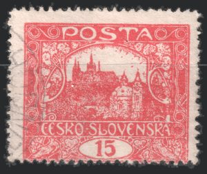
8Desplazamiento a la izquierda y hacia arriba — la fila inferior llega hasta el marco.
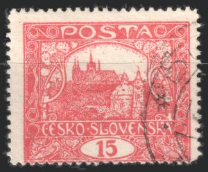
9Desplazamiento a la izquierda y hacia arriba; abajo el dentado casi toca el marco, a la izquierda y arriba queda margen.
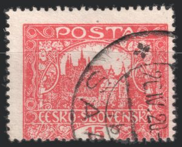
10Fuerte desplazamiento oblicuo a la izquierda y hacia arriba — a la derecha y abajo el dentado pasa pegado al marco.
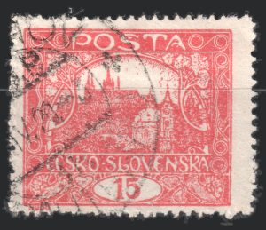
11Desplazamiento a la derecha, en vertical solo leve — margen ancho a la derecha, estrecho a la izquierda.
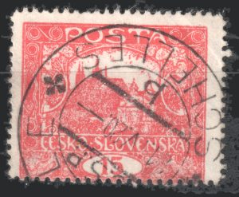
12Desplazamiento a la derecha y hacia arriba; la fila inferior queda justo debajo del marco.
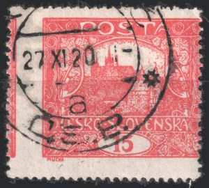
13Fuerte desplazamiento a la izquierda — a la derecha el dentado atraviesa el marco, a la izquierda queda en el margen una tira del sello vecino.
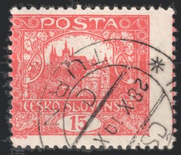
14Fuerte desplazamiento a la derecha — a la izquierda el marco está cortado, a la derecha queda una tira de la impresión del sello vecino.
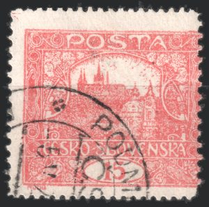
15Desplazamiento a la izquierda y hacia arriba — a la derecha el dentado atraviesa el marco, arriba y a la izquierda queda margen.
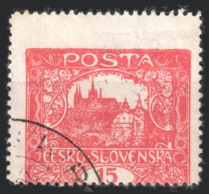
16Desplazamiento muy fuerte hacia arriba — sobre el dibujo sobra una ancha tira de papel en blanco, y la fila inferior queda pegada al marco.
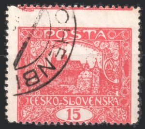
17Fuerte desplazamiento hacia arriba; junto al borde superior se ve un resto de la impresión del sello vecino.
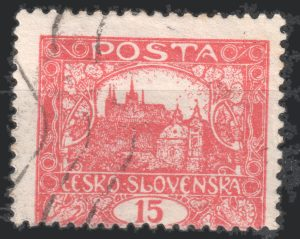
18Desplazamiento a la izquierda y hacia arriba — abajo el dentado llega hasta el marco, arriba queda un margen ancho.
19
Pareja horizontal. La fila vertical entre ambos sellos está desplazada a la derecha: el sello izquierdo tiene un margen derecho inusualmente ancho, y al derecho le queda cortado el marco izquierdo. Además, ambas filas verticales exteriores pasan pegadas a los marcos.
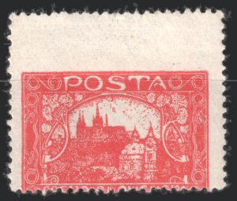
20Desplazamiento extremo hacia arriba — sobre el dibujo queda casi la mitad del papel en blanco, mientras que abajo el dentado atraviesa el dibujo.
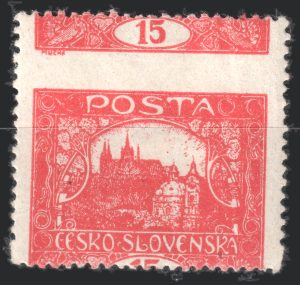
21El ejemplar más elocuente del conjunto: la fila horizontal se perforó muy dentro del sello vecino, de modo que arriba quedó todo su borde inferior, incluido el óvalo del valor 15. El dibujo propio está cortado por abajo.
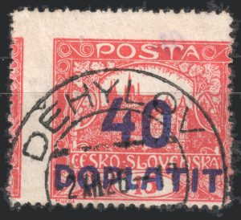
22Sobrecarga DOPLATIT 40 h. Fuerte desplazamiento a la izquierda — a la derecha el marco está cortado, a la izquierda queda una tira del sello vecino.
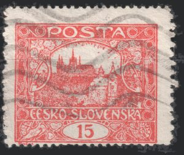
23Desplazamiento a la derecha y hacia arriba — a la izquierda y abajo el dentado pasa pegado al marco.
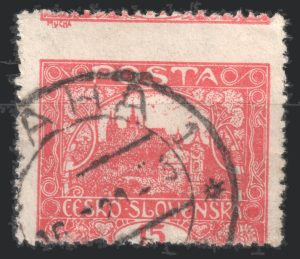
24Fuerte desplazamiento hacia arriba y a la izquierda; junto al borde superior se ve un resto de la impresión del sello vecino.
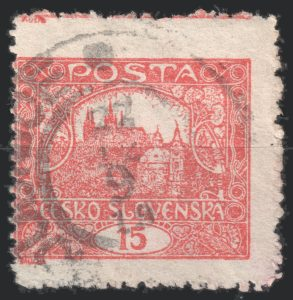
25Desplazamiento hacia la derecha y hacia arriba — a la izquierda la perforación pasa justo junto al marco; arriba queda una banda de papel sobrante con un resto de la impresión del sello vecino.
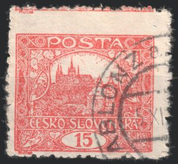
26Desplazamiento hacia la derecha y hacia arriba — a la izquierda la fila llega hasta el marco; arriba queda un margen ancho con un resto de la impresión del sello vecino.
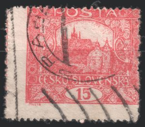
27Desplazamiento a la izquierda y hacia abajo — a la derecha el dentado atraviesa el marco, a la izquierda hay en el margen un resto del sello vecino.
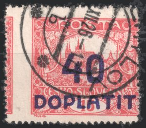
28Sobrecarga DOPLATIT 40 h. Fuerte desplazamiento a la izquierda y hacia arriba — a la izquierda queda una tira del sello vecino, a la derecha el dibujo está cortado.
Defectos de impresión
Impresión parcialmente duplicada
En estos sellos el dibujo se divide en dos partes por un límite horizontal recto. Por encima de él la impresión es limpia y nítida; por debajo, más pesada, borrosa y en algunos puntos duplicada — los contornos se repiten desplazados una fracción de milímetro. El límite es recto como trazado con regla, no tiene nada que ver con el dibujo y continúa también en los márgenes laterales del sello. En los cinco ejemplares documentados queda aproximadamente a la misma altura.
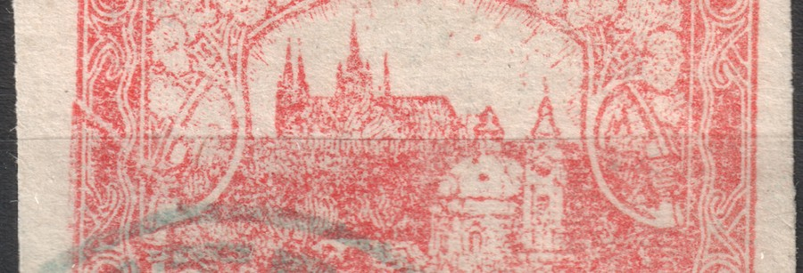
Cómo se originó el defecto
La causa está bajo el pliego, no en la plancha de impresión. Durante la impresión se coló bajo el pliego un cuerpo extraño — probablemente otra hoja de papel: una guarda, papel de desecho o una esquina doblada del propio pliego. Su borde recto levantó parte de la superficie de impresión y, desde ese momento, el pliego se imprimió a dos alturas distintas.
- La parte levantada asentó sobre la forma antes y con mayor presión de aquella para la que estaba ajustada la máquina.
- Bajo ese exceso de presión el papel se desplazó ligeramente sobre la forma y la impresión se emborronó hasta duplicarse — por eso los contornos se repiten separados solo por una fracción de milímetro.
- El resto del pliego quedó a la altura normal y se imprimió limpiamente.
- La transición entre ambas zonas es, por tanto, tan recta como el borde de la hoja que causó el levantamiento. Sigue al cuerpo extraño, no al dibujo — y justamente por eso pasa sin atender a lo que hay impreso debajo.
- Que se trata de una situación puntual en la prensa lo apoya también la altura idéntica del límite en los cuatro ejemplares: corresponde a sellos de una misma fila del pliego, la fila que cruzaba el borde de la hoja interpuesta.
Por qué no se trata de una plancha agrietada
Los ejemplares de este tipo aparecen en las ofertas como «plancha de impresión agrietada». Es un error, y distinguir ambas cosas resulta sencillo:
- Una grieta añade tinta. En la fisura de la plancha se retiene tinta, de modo que se imprime como una línea de más. Aquí no se ha añadido ninguna línea — el dibujo es el mismo a ambos lados del límite, solo difiere la calidad de la impresión.
- Una grieta es constante. Pertenece a una posición, se repite en cada pliego siguiente y aumenta con el tiempo, de modo que se puede dividir en fases. Una zona borrosa no se repite en ningún sitio — surgió en un paso concreto de la prensa.
- La grieta pertenece a la plancha; este límite, al papel. La separación cruza tanto el dibujo como el margen del sello y no atiende a lo que hay debajo; la grieta, en cambio, queda siempre en un punto concreto del dibujo.
Cómo es un daño real de la plancha — con línea de color, ligado a una posición y escalonado en el tiempo — lo muestra el apartado Daños de la plancha de impresión, donde está también la grieta en 11/II.
Ejemplos de la colección
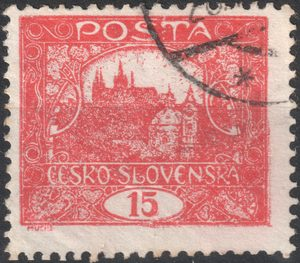
1El límite pasa aproximadamente por el centro del sello. Por encima la impresión es limpia; por debajo, más pesada y con los contornos difuminados.
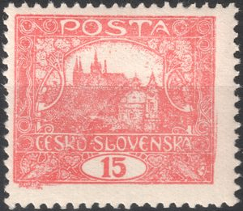
2El límite a la altura del pie de Hradčany. La parte inferior de la impresión es más blanda y más clara, la superior se mantuvo nítida.
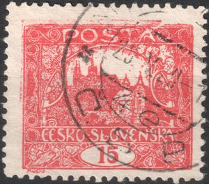
3Ejemplar con un matasellos denso; el límite lo delata una separación horizontal a la altura de las torres, más legible en la parte derecha del sello.
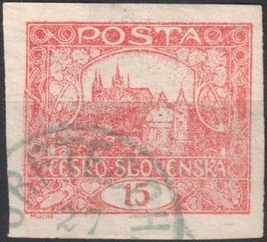
4El ejemplar más claro del conjunto. El límite recto atraviesa todo el sello y continúa también en los márgenes laterales; por debajo, los contornos están duplicados. De este ejemplar procede también el recorte de más arriba.
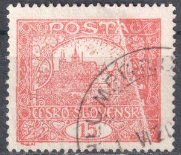
5Un ejemplar con un matasellos legible del 1 de junio de 1920. El límite pasa justo debajo del arco, a la altura de las torres superiores del Hradčany.
«Anillos errantes»
Aparece una pequeña mancha oscura o un anillo de contorno nítido en un lugar donde el dibujo debería quedar completamente blanco — en un hueco entre las torres, en una letra de la inscripción, bajo un anillo ornamental del marco. A diferencia de un defecto de plancha, su posición varía de un ejemplar a otro: no está ligada a un campo de sello concreto.
Cómo se originó el defecto
En el rodillo entintador o directamente en la forma de imprenta se adhiere una motita — un trocito de tinta seca, suciedad o una fibra de papel empapada en tinta. Se imprime solo en ese único lugar de un pliego; el resto de la tirada no se ve afectado. Según la forma y el tamaño de la motita, el resultado es una mancha maciza o bien — cuando ha hecho contacto sobre todo su borde — un pequeño anillo.
Por qué esto no es un velo (závoj)
El velo (závoj) surge de un exceso de tinta generalizado en el rodillo o la forma y se manifiesta como tinta extendida sobre una zona más amplia del dibujo. El anillo errante, en cambio, proviene de una única motita aislada en un punto concreto — por eso es nítido, pequeño, y su posición difiere de un ejemplar a otro, mientras que el velo se mantiene donde el relieve de la plancha es más marcado.
Ejemplos de la colección
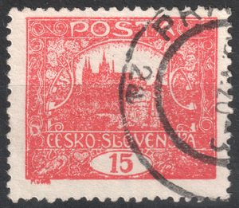
1En la inscripción «ČESKO-SLOVENSKA», a la izquierda.
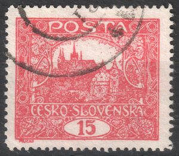
2En la parte izquierda de la silueta de Hradčany.
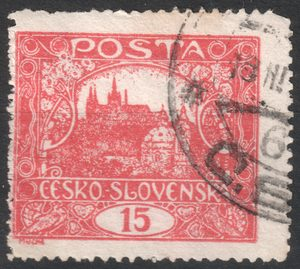
3En la parte izquierda de la silueta de Hradčany.
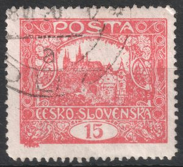
4En el centro de la silueta de Hradčany.
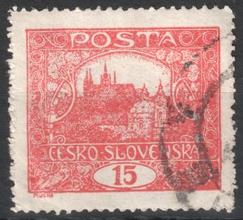
5En la parte izquierda de la silueta de Hradčany.
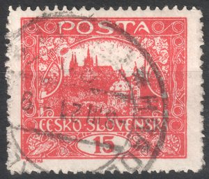
6En la parte izquierda de la silueta de Hradčany.
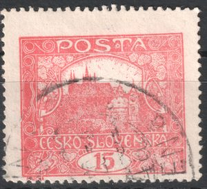
7Un anillo genuino bajo la silueta del castillo — véase el detalle más abajo.
8
Una mancha maciza en el hueco entre las torres — véase el detalle más abajo.
9
En el ornamento inferior del marco, a la derecha del óvalo de valor.
10
En el ornamento inferior del marco, a la izquierda del óvalo de valor.
11
En la parte superior del dibujo, a la derecha de la inscripción «POŠTA».
12
En la parte izquierda de la silueta de Hradčany.
13
En la parte izquierda de la silueta de Hradčany.
14
Un anillo con núcleo oscuro y halo claro — en el borde derecho del dibujo, entre el follaje a la derecha de las torres de la iglesia, justo encima de la franja de la inscripción.
Velos — exceso de tinta
En lugar de un borde nítido, aquí la tinta se derrama en una mancha suave y difusa, que continúa una línea impresa o se desborda alrededor de un elemento denso y en relieve del dibujo — casi siempre el pequeño adorno en forma de corazón de la esquina del marco. La mancha no tiene un límite propio claro; se desvanece gradualmente hacia el blanco.
Cómo se originó el defecto
El mecanismo es el mismo que en una mancha clara, solo que en el extremo opuesto de la escala — véase el esquema al principio de este capítulo. El exceso de tinta en un elemento en relieve de la forma o del rodillo se extiende hacia los lados bajo la presión. Cuanto más denso y elevado sea el dibujo en un punto dado, más tinta se acumula allí y más fácilmente se extiende — por eso el velo aparece casi siempre en los mismos tipos de lugares: adornos de esquina, líneas gruesas del marco.
Por qué esto no es un anillo errante
El anillo errante proviene de una única motita aislada, por lo que es pequeño, nítido y se encuentra solo en una zona blanca. El velo, en cambio, proviene de un exceso de tinta generalizado sobre una parte en relieve del dibujo y siempre continúa desde ella o se derrama de ella — nunca se encuentra aislado ni tiene un borde nítido.
Uno de los ejemplares documentados lleva en su ficha de coleccionista una referencia al campo 35/V. Si el mismo velo se repitiera en este campo en otros pliegos, ya no se trataría de un defecto de fabricación aleatorio, sino de un defecto ligado a un campo concreto de la plancha — la cuestión sigue abierta.
Ejemplos de la colección
1
En el ornamento inferior del marco, a la derecha del óvalo de valor.
2
Bajo la silueta del castillo, cerca del borde izquierdo.
3
En el centro de la silueta de Hradčany.
4
En el centro de la silueta de Hradčany.
5
En el centro de la silueta de Hradčany.
6
En el centro de la silueta de Hradčany.
7
Junto al óvalo de valor con la cifra 15.
8
En la parte derecha de la silueta de Hradčany.
9
En el centro de la silueta de Hradčany.
10
En la parte izquierda de la silueta de Hradčany.
11
En el centro de la silueta de Hradčany.
12
En la inscripción «ČESKO-SLOVENSKA», a la izquierda.
13
En el centro de la silueta de Hradčany.
14
En la parte derecha de la silueta de Hradčany.
15
Junto al óvalo de valor con la cifra 15.
16
Junto al óvalo de valor con la cifra 15.
17
En la inscripción «ČESKO-SLOVENSKA», a la izquierda.
18
En el centro de la silueta de Hradčany.
19
En el centro de la silueta de Hradčany.
ClarasImpresión localmente debilitada o ausente por un punto dañado u obstruido de la plancha. Tratado en una página aparte — claras en la plancha I.
Impresión empastadaEn preparación.
Manchas blancas
Donde debería haber una impresión normal y densa, falta el color por completo — una mancha blanca tiene un límite nítido y no continúa ninguna línea impresa ni ningún elemento en relieve del dibujo, como ocurre con el velo (závoj). Su posición, tamaño y forma varían de una pieza a otra y no están ligados a un campo concreto de la plancha.
Cómo se originó el defecto
Entre el entintado de la forma y la impresión del papel, un cuerpo extraño se posó sobre la tinta ya aplicada: una mota de polvo, una fibra, una pequeña astilla o incluso un cabello. Al no ser absorbente, el objeto queda una fracción de milímetro por encima de la tinta, de modo que en ese punto el papel nunca llega a tocarla. El resto de la impresión no se ve afectado; en cuanto el objeto se desplazó o fue retirado antes de la siguiente impresión, el defecto desapareció con él, por lo que la mancha nunca se repite en el mismo lugar y aparece de forma distinta, o no aparece, en otras piezas.
Por qué esto no es una clara (světlina)
Una clara (světlina) surge de un daño permanente o de una obstrucción en un punto concreto de la plancha, por lo que reaparece en el mismo campo en cada impresión, y además su borde es difuso, porque la pérdida de tinta se desarrolla de forma gradual. La mancha blanca, en cambio, es un hecho puntual: la causó un objeto suelto que ya no estaba en la siguiente impresión, por lo que su borde es nítido y su posición cambia de una pieza a otra.
Por qué esto no es un plegado
El plegado se produce por un doblez en el papel húmedo antes de la impresión: falta tinta en el pliegue, pero sobre todo el dibujo se desplaza a ambos lados del pliegue y deja de coincidir, porque el papel se "estiró" al desdoblarse. En la mancha blanca el papel está perfectamente intacto — sin ninguna raya, sin desplazamiento del dibujo; solo falta la tinta en un punto delimitado.
Por qué esto no es una astilla o una mota incrustada
Tanto la astilla como la mota son cuerpos extraños incrustados directamente en el papel durante su fabricación, por lo que se ven en ambas caras del sello: en el anverso alteran la impresión, en el reverso se aprecia su contorno. El objeto que causó la mancha blanca se encontraba solo sobre la forma de impresión: el reverso está, por tanto, completamente limpio, sin rastro alguno.
Ejemplos de la colección
1
Una gran mancha en la esquina inferior izquierda, bajo la inscripción ČESKO-SLOVENSKA — el ejemplar más marcado documentado.
2
Una mancha muy tenue, apenas perceptible, en la inscripción ČESKO-SLOVENSKA y en el ornamento a la izquierda del óvalo del valor — el caso más débil documentado.
3
Una mancha de bordes nítidos que atraviesa la base del castillo y la letra L de la inscripción ČESKO-SLOVENSKA — la letra desaparece por completo.
4
Una mancha diagonal que atraviesa las torres, la inscripción y el óvalo de valor, parcialmente oculta bajo el matasellos.
Impresión diluida con manchas de tinta
En estos sellos, la impresión es inusualmente débil y diluida en todo el dibujo — el grabado fino, las guirnaldas a los lados del marco, el sombreado radiante del cielo y la textura de la ladera bajo el castillo están casi borrados, el color es más bien rosa pálido que rojo intenso. En esos mismos lugares donde, según el dibujo, debería haber color — de forma más llamativa en el fino sombreado radiante del cielo sobre el castillo — la tinta se ha concentrado en algunos puntos en pequeños puntos y manchas de rojo intenso. Las manchas no se encuentran en las zonas blancas del dibujo, sino exactamente donde debería estar la impresión, solo que en cantidad distinta.
Cómo se originó el defecto
La causa no es la cantidad de tinta en la forma, sino su consistencia. Una tinta demasiado diluida no se reparte de manera uniforme a lo largo de las finas líneas del sombreado — casi siempre solo llega al papel una capa fina, pero en los puntos donde la tinta diluida se acumula o se concentra, se deposita de golpe más cantidad y se imprime como un punto o mancha más oscura. La impresión débil y diluida y las manchas más oscuras son así dos manifestaciones de una misma causa, no dos defectos independientes — por eso aparecen juntas en todos los ejemplares documentados hasta ahora.
Por qué esto no es una mancha blanca
Una mancha blanca se produce cuando un cuerpo extraño en la forma impide que la tinta llegue al papel dentro de una impresión por lo demás normalmente saturada — se trata, pues, de una pérdida de color nítidamente delimitada en una zona aislada. Aquí ocurre lo contrario: aparece color de más en medio de una impresión globalmente poco entintada, y justo en los lugares del dibujo, no fuera de ellos.
Por qué esto no es un anillo errante
Un anillo errante procede de una única mota aislada en el rodillo entintador o en la forma, que se imprime como una pequeña mancha o anillo en una zona por lo demás totalmente blanca del dibujo, y solo en un pliego concreto. Aquí, en cambio, las manchas aparecen a lo largo de toda una serie — en siete ejemplares distintos —, siempre junto con una impresión globalmente débil, y se sitúan sobre las finas líneas del dibujo, no aisladas en la zona blanca.
Por qué esto no es un velo (závoj)
Un velo se produce por un exceso de tinta en un elemento denso y en relieve del dibujo (con mayor frecuencia el ornamento en forma de corazón o una línea gruesa del marco) y tiene un borde suave y difuso que se funde gradualmente con el blanco. Las manchas de la impresión diluida, en cambio, son pequeñas y de contorno bastante nítido, no están ligadas a ningún elemento en relieve concreto, y se originan por una falta, no por un exceso de tinta en la forma.
Por qué esto no es una clara (světlina)
Una clara (světlina) es un debilitamiento local y permanente de la impresión, ligado a una posición concreta de la plancha — reaparece una y otra vez en el mismo lugar, mientras el resto del dibujo conserva una saturación normal. Aquí, en cambio, es la impresión entera la que resulta débil, en toda la superficie del sello, y los ejemplares documentados proceden evidentemente de pliegos o posiciones distintas — se trata, por tanto, más bien de una característica de una tirada de impresión o de un lote de tinta que de un punto dañado de la plancha.
Por ahora solo están documentados estos siete ejemplares, y en ninguno se conoce la posición de plancha ni la fecha de impresión. Si en el futuro aparecieran más ejemplares, sería útil comprobar si las manchas se mantienen en el mismo lugar en ejemplares de la misma posición, o si se trata realmente de una característica general de todo un lote de tinta o de una tirada — la cuestión permanece, por ahora, abierta.
Ejemplos de la colección
1
Un ejemplar fuertemente matasellado; incluso en los espacios libres entre las marcas del matasellos se aprecia la impresión pálida y diluida.
2
La guirnalda en la esquina izquierda del marco está casi borrada, y en el cielo a la derecha de las torres hay dispersas algunas manchas pequeñas — el detalle de la guirnalda borrada más abajo procede de este ejemplar.
3
El grupo de manchas más denso documentado — en el cielo a la derecha de las torres, junto al ornamento floral. El detalle de las manchas más abajo procede de este ejemplar.
4
Un ejemplar con matasellos denso; en el cielo sobre el castillo asoman, no obstante, algunas manchas pequeñas.
5
Además de puntos pequeños en el cielo, también presenta una mancha continua y marcada arriba a la derecha, bajo la inscripción POSTA — el caso más intenso documentado.
6
Otro grupo claro de manchas pequeñas en el cielo a la derecha de las torres, junto al ornamento floral.
7
Un ejemplar sin matasellos sobre la parte superior del dibujo — se aprecia bien la impresión general diluida y las pequeñas manchas en el cielo.
Daños de la plancha de impresión
Un caso particular entre los defectos de fabricación. Un defecto de plancha constante corriente está en la plancha desde el principio y pertenece a la reconstrucción de planchas — lo encontrará en la galería de posiciones. Aquí se recogen solo los casos en los que la plancha se dañó durante su uso, las más de las veces al limpiarla. Ese daño evoluciona con el tiempo, de modo que se puede dividir en fases — y las fases ayudan después a situar cronológicamente cada ejemplar. En el valor de 15h hay dos casos tratados así.
15h – plancha de impresión agrietada en 11/II
Ampliado el 24 de junio de 2017
Las grietas de la plancha de impresión aparecen, en varios valores de esta emisión, sobre todo en las posiciones marginales, donde el riesgo de daño mecánico es naturalmente mayor. Al reconstruir la primera y la segunda plancha de impresión del valor de 15h (POFIS n.º 7) me topé con un ejemplo muy interesante de plancha de impresión agrietada.
Una grieta marcada de la esquina superior izquierda aparece en la posición 11 de la 2.ª plancha de impresión. Supongo que se originó por un daño de la plancha de impresión durante la limpieza periódica. La aparición de sellos con este daño es, desde mi punto de vista, rara.


Evolución de la grieta
La grieta fue evolucionando poco a poco, como se aprecia en las imágenes de cada fase:


Fase 0 – plancha intacta · Fase 1 – deformación leve · Fase 2 – la plancha presenta la grieta · Fase 3 – la grieta se agranda · Fase 4 – fase final
| Dentado | Fase 0 plancha intacta | Fase 1 la plancha aún no está agrietada, pero presenta deformación | Fase 2 la plancha presenta la grieta | Fase 3 la grieta se agranda | Fase 4 fase final de la grieta |
|---|---|---|---|---|---|
| sin dentar | ✓ | ✓ | ✓ | ✓ | |
| A | ✓ | ✓ | ✓ | ||
| B | ✓ | ||||
| C | ✓ | ✓ | |||
| D | ✓ | ✓ | ✓ | ||
| E | ✓ | ✓ | |||
| F | ✓ | ✓ | ✓ |
Añadido: en el servidor infofila.cz el colega Jaroslav Michalík publicó un artículo interesante sobre esta cuestión: infofila.cz – Hradčany: planchas de impresión agrietadas.
15h – marco dañado en 60/VI
El valor de 15h de la emisión Hradčany se cuenta entre los más apreciados por su variabilidad – tanto de matices, que siguen siendo objeto de discusiones serias, como por el número de planchas de impresión y de medidas de dentado.
Quienes se hayan ocupado de la reconstrucción o del estudio de las planchas de impresión del 15h o se centren en los defectos de plancha habrán podido toparse con un objeto interesante en el borde derecho del marco del dibujo en la posición 60 de la VI plancha de impresión. La Monografía de los sellos checoslovacos n.º 1 describe esta posición como una de las que tienen un defecto de plancha seleccionado – precisamente por causa de ese objeto.
Durante las reconstrucciones me topé con el hecho de que el objeto evoluciona. Así se ve 60/VI en una prueba que todavía no tiene los bordes acabados (una de las primeras pruebas de la plancha):

Durante la impresión y sobre todo durante el mantenimiento de las planchas de impresión (¿la limpieza?) pudo producirse un daño que deformó el saliente original con consecuencias notables:
Distinguimos, pues, dos tipos: la variante del marco con el saliente original la designamos tipo I, y la variante con el marco desconchado (deformado), tipo II.
En los ejemplares disponibles no se aprecia que el defecto siga creciendo – a pesar de que la VI plancha se empleó para imprimir una gran cantidad de pliegos y hacia el final estaba muy desgastada. La aparición de ambos tipos en mi material se resume en la tabla siguiente:
| Dentado | Tipo I (saliente) | Tipo II (marco desconchado) | Total |
|---|---|---|---|
| A (13¾:13½) | 2 (100 %) | 0 (0 %) | 2 |
| B (11¾) | 3 (20 %) | 12 (80 %) | 15 |
| C (13¾) | 9 (82 %) | 2 (18 %) | 11 |
| Total | 14 (50 %) | 14 (50 %) | 28 |
El tipo I (el saliente) es el único documentado en el dentado A y predomina claramente en el dentado de línea C (82 %). En cambio, en el dentado de peine B domina el tipo II, con el marco desconchado (80 %). Las proporciones distintas en cada dentado indican que los pliegos con ambos estados de la plancha llegaron a la perforación en un orden diferente. En la suma total, la proporción de ambos tipos resulta exactamente 1:1 (14:14) — no se trata, por tanto, de un defecto raro.
Detalle de la zona en ambas variantes:
Defectos del papel
Arruga del papel
Los sellos de la emisión se imprimieron sobre papel humedecido. Una hoja húmeda es blanda y se ondula con facilidad, y cuando no entraba en la máquina perfectamente tensa, se plegaba bajo la presión y en el punto del doblez quedaba una arruga. La impresión se producía entonces sobre una superficie arrugada: en el propio doblez la tinta no llegaba a imprimirse y, al extenderse el papel, el dibujo queda «estirado». Por eso en el sello acabado se ve una franja clara sin impresión y sus dos lados no encajan — el dibujo está allí interrumpido y desplazado.
Por qué se producen las arrugas
- El papel se humedecía antes de imprimir para que aceptara mejor la tinta. Un pliego húmedo pierde rigidez, se ondula y se pliega con mucha más facilidad que uno seco.
- Los pliegos se colocaban en la máquina a mano. Bastaba con que una hoja no asentara recta o con que un borde se doblara por debajo, y la arruga existía antes de que la forma bajara.
- La emisión se produjo en 1919 con prisas y con un equipamiento provisional — por la misma razón por la que también son corrientes en ella los demás defectos de fabricación.
- Después de la impresión el pliego se secó y encogió. Con ello la arruga quedó fijada y permaneció en el papel incluso después de dividir el pliego en sellos sueltos.
Grados de arrugamiento
- Ondulación — el papel solo está ondulado, el dibujo se mantiene continuo y únicamente ondea ligeramente. Es el estado menos llamativo.
- Arruga — en el dibujo hay una franja clara y fina sin impresión; ambos lados del dibujo están desplazados entre sí solo mínimamente.
- Pliegue — el papel quedó doblado sobre sí mismo. La franja sin imprimir es ancha, el dibujo claramente no encaja y el sello parece deformado. Es el grado más elocuente y el más solicitado por los coleccionistas.
Cómo distinguir un defecto de fabricación de un daño posterior. Lo decisivo es si el dibujo continúa a través de la arruga. Si la arruga se produjo antes de la impresión, en ella falta la tinta y el dibujo no encaja a ambos lados — eso es un defecto de fabricación. Si el papel se arrugó después de la impresión, el dibujo continúa sin interrupción a través del doblez y solo el papel está plegado; entonces se trata de un daño que, al contrario, reduce el valor. En los múltiples la prueba es más contundente: una arruga que pasa de un sello a otro cruzando el espacio intermedio tenía que estar ya en el pliego durante la impresión.
Ejemplos de la colección
Veintiséis sellos en veinticuatro piezas — veintidós individuales, una pareja horizontal sin dentar (pieza 1) y una pareja vertical (pieza 23). Haga clic en un ejemplar para ampliarlo.
1
Pareja horizontal sin dentar. La arruga recorre ambos sellos a la misma altura y continúa también por el espacio que los separa — se produjo, por tanto, en el pliego, antes de que los sellos fueran separados.
2
Pliegue oblicuo pronunciado desde el borde superior hasta el inferior. A lo largo de él el dibujo es más claro y ambos lados del pliegue no encajan.
3
Arruga oblicua por el centro del dibujo; bajo el matasellos denso la delata sobre todo la franja clara sin impresión.
4
La arruga pasa horizontalmente por el centro del dibujo y junto al borde izquierdo se curva hacia arriba.
5
Larga arruga oblicua por todo el dibujo, desde la esquina superior izquierda hasta la inferior derecha.
6
Arruga por todo el sello — desde el borde izquierdo asciende ligeramente hacia la derecha e interrumpe tanto el dibujo como la inscripción.
7
Arruga oblicua en la mitad derecha del sello, desde el borde superior hacia abajo hasta la inscripción.
8
Arruga horizontal por la parte superior del dibujo, paralela al marco.
9
Arruga horizontal por el centro del dibujo.
10
Arruga horizontal por el centro del sello; por debajo de ella la impresión es notablemente más clara.
11
Arruga vertical junto al borde izquierdo, atraviesa el marco y el dentado.
12
Ejemplar recortado. Una arruga oblicua desciende desde el borde derecho atravesando el dibujo.
13
Arruga horizontal por la mitad superior del dibujo.
14
Arruga vertical junto al borde derecho; atraviesa también el dentado.
15
Arruga vertical junto al borde derecho y otra horizontal más débil en la parte superior del sello.
16
Arruga horizontal por el centro del dibujo, en toda la anchura del sello.
17
Ejemplar recortado con una arruga vertical junto al borde izquierdo.
18
Dos arrugas verticales paralelas en la parte derecha del sello.
19
Arruga horizontal sobre la inscripción ČESKO-SLOVENSKA.
20
Fina arruga oblicua en la parte superior derecha del dibujo.
21
Arruga oblicua desde el borde izquierdo hacia el centro del dibujo.
22
Arruga vertical en la parte derecha del sello y otra oblicua más corta en la esquina superior.
23
Pareja vertical. La arruga atraviesa ambos sellos y también el espacio dentado que los separa — otra prueba de que el arrugamiento se produjo ya en el pliego.
24
Un pliegue vertical junto al margen izquierdo, en un ejemplar con la sobrecarga SO 1920 (campo 92/I).
Astilla y mota — cuerpo extraño en el papel
Ya durante su fabricación se coló en el papel un cuerpo extraño — un fragmento de madera, un trozo de corteza o una fibra sin desintegrar que sobrevivió al despastillado. Los coleccionistas tienen para él dos nombres según su forma: a la astilla alargada la llaman dřívko (astilla), y a la partícula pequeña y compacta smítko (mota). El objeto quedó prensado en el espesor del pliego y el sello lo lleva hasta hoy.
La señal para reconocerlo es que se ve por ambas caras. La suciedad que se posó sobre el sello más tarde queda en la superficie de una sola cara. La astilla está encerrada en el papel y por eso se manifiesta tanto por el anverso como por el reverso — en el mismo lugar, solo que invertido en espejo.
Cómo se originó el defecto
El objeto entró en el papel en la fábrica de papel, mucho antes de la impresión — no tiene nada que ver con la forma de impresión y no se repite en la misma posición. La emisión se imprimió en el papel que se podía conseguir en 1919; la calidad era variable y el control de la materia prima no figuraba entre las cosas que entonces más importaban. Los cuerpos extraños en el papel son, por tanto, bastante frecuentes en esta emisión.
Como el objeto ya estaba allí durante la impresión, la impresión reacciona a él. En ese punto la superficie no es lisa y absorbe de otro modo, así que la tinta no se transfiere como debería: alrededor de la partícula suele haber un halo claro sin impresión, o el dibujo queda interrumpido. En el reverso se ve a veces a su alrededor un cerco translúcido — las fibras del papel se separaron alrededor del objeto y allí el papel es más delgado.
Cómo distinguirlo de una suciedad posterior. Lo decisivo es si el objeto está en el papel o sobre él. Una partícula prensada se ve por ambas caras, no se puede raspar y la impresión a su alrededor está alterada — la tinta no llegó hasta ella. La suciedad adherida después queda solo en una cara, el dibujo continúa ininterrumpido bajo ella y con luz rasante sobresale de la superficie. Una astilla mayor debilita además el papel: en ese punto el pliego es más delgado y se rasga con más facilidad, de modo que conviene manejar un ejemplar así con cuidado.
Ejemplos de la colección
En cada pieza, a la izquierda está el anverso y a la derecha el reverso del mismo sello. Al hacer clic, el ejemplo se amplía.
1
La pieza más llamativa. Una astilla de casi 2 mm de largo, con una estructura fibrosa apreciable. Por el anverso queda en la superficie de Hradčany y la impresión pierde el dibujo a su alrededor; por el reverso es marrón y sobresale ligeramente de la superficie.
2
Mota alargada más pequeña junto al borde superior del dibujo, a la derecha. Atraviesa el marco, que está debilitado en ese punto; por el reverso es más clara, de color pardo grisáceo.
3
Ejemplar con la sobrecarga 40 DOPLATIT. Mota compacta de aproximadamente 1,5 mm en la parte izquierda del dibujo, con un halo claro bien marcado — la tinta roja no llegó hasta el objeto. Por el reverso es marrón, con un cerco translúcido.
Pliegues del papelEn preparación.
La sección va creciendo poco a poco. Cada tipo de defecto recibirá un apartado propio con la descripción de cómo se originó y con sus propios ejemplares; cuando un apartado desborde la página, se separará en una página propia y aquí quedará un resumen con el enlace — como en el caso de las claras.